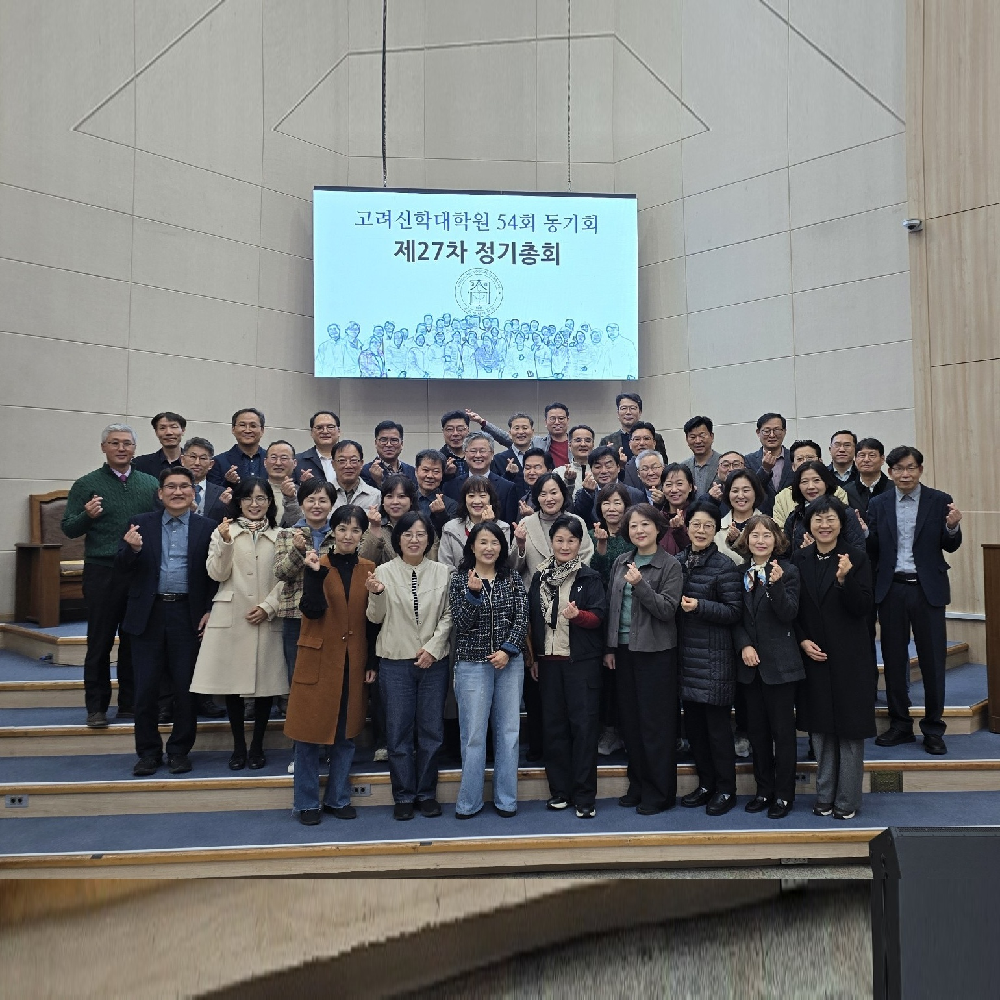

| 순 서 | 내 용 | 담당자 |
|---|---|---|
| 신앙고백 | 사도신경 | 다함께 |
| 찬 양 | 90장 (주 예수 내가 알기 전) | 다함께 |
| 대표기도 | - | 최성광 부회장 (행복한교회) |
| 성경말씀 | 요한복음 13:34~35 | 인도자 |
| 설 교 | “우리 서로 사랑하자” | 신동진 회장 (마산제일교회) |
| 축 도 | - | 설교자 |
| 광 고 | - | 황대원 총무 (군북중앙교회) |
회장 백승한 목사의 사회로 다 함께 찬송 후, 최성광 목사(문경 행복한교회)가 대표기도를 인도하다. 신동진 목사(마산제일교회)가 요한복음 13장 34~35절을 본문으로 『새 계명과 그리스도인의 표지』 제하의 말씀을 선포하고 직전회장의 축도로 예배를 마치다.
회계기간: 2025.11.06 ~ 2026.11.04 (단위: 원) | 제27차 정기총회 수정 결의 최종 확정안
| 구분 | 내 역 | 금 액 (원) | 비 고 |
|---|---|---|---|
| 수 입 | 이 월 금 | 1,592,237 | 전기 이월 |
| 회 비 | 4,456,000 | 회원 연회비 완납분 반영 | |
| 이 자 | 1,358 | 통장 결산 이자 | |
| 수 입 계 | 6,049,595 | ||
| 지 출 | 총 동 창 회 | 621,600 | 점심식사비용 |
| 경 조 비 | 2,100,000 | 별지참조 | |
| 감 사 | 200,000 | 행복한교회 감사 | |
| 사 무 비 | 100,000 | 임원서기 | |
| 회의활동비 | 1,800,000 | 회장활동비포함(임원회7회) | |
| 지 출 계 | 4,821,600 | ||
| 합 계 잔 액 | 1,227,995 | 차기 이월 (통장 일치) | |
| 일 시 | 내 역 | 수 입 (원) | 지 출 (원) |
|---|---|---|---|
| 2025.11.09 | 이 월 금 | 6,882,728 | - |
| 2026.07.13 | 이현길목사사모위로 | - | -3,000,000 |
| 2026.08.14 | 박현민목사사모위로 | - | -1,000,000 |
| 2026.09.18 | 김호영목사수술위로 | - | -500,000 |
| - | 메토코스선교회 | 9,580,000 | - |
| - | 이자 & 송금 | 2,756 | - |
| 수입·지출 합계 | 16,465,484 | -4,500,000 | |
| 메토코스 현재 잔액 | 11,965,484 | ||
고려신학대학원 54회 등록 회원 117명 전원의 2015년부터 2026년까지 11개년 납부 장부 전수 데이터입니다. 본인 성함을 검색해 보세요.
12년간 단 한 해도 빠짐없이 회비를 납부한 54회의 가장 든든한 기둥
누적 납부액 기준 동기회 살림에 가장 크게 기여하신 동역자
최근 4년간(2023~2026) 매년 한 해도 거르지 않고 완납하신 핵심 동역자입니다. (4개년 1회 이상 납부자는 총 91명)
| 번호 | 성명 | '15 | '16 | '17 | '18 | '19 | '20 | '21 | '22 | '23 | '24 | '25 | '26년 | 누적합계 |
|---|---|---|---|---|---|---|---|---|---|---|---|---|---|---|
| 1 | 강정웅 | 4 / 5 | 4 | 4 | 5 / 10 | 10 | 10 | 10 | 6 | 6 | 6 | 6 | 6 | 92만 |
| 2 | 강태원 | 4 | 4 | 2 / 2 | 4 | 2 | 4 | 6 | 6 | - | 12 | 6 | 6 | 58만 |
| 3 | 강화구 | - | - | - | - | 10 | 32 / 2 | 6 | 6 | 6 | 6 | 6 | 6 | 80만 |
| 4 | 곽동철 | - | 2 | 2 / 2 | 2 / 2 | 2 / 2 | 2 | 2 / 3 | 6 | 6 | 3 | - | 6 | 42만 |
| 5 | 김규환 | - | - | - | - | - | - | 10 | 6 | 10 | 10 | - | 6 | 42만 |
| 6 | 김상훈 | - | - | - | - | - | 4 | 6 | 6 | 6 | 6 | - | 6 | 34만 |
| 7 | 김성균 | - | - | - | - | - | - | - | 6 | 3 | 6 | 6 | 6 | 27만 |
| 8 | 김성민 | - | - | - | - | - | - | - | - | - | - | 6 | 6 | 12만 |
| 9 | 김성욱 | - | - | - | - | - | 12 | 6 | - | - | - | - | - | 18만 |
| 10 | 김성호 | 2 | - | - | - | - | - | - | - | - | - | - | - | 2만 |
| 11 | 김영식 | 2 / 2 | 2 | 2 | 2 / 2 | 2 / 2 | - | - | 6 | 10 | 10 | - | - | 42만 |
| 12 | 김은수B | - | 4 | - | - | 4 | - | 12 | 6 | 6 | 6 | 6 | 6 | 50만 |
| 13 | 김인석 | 4 | 4 | - | - | 8 | 10 | 10 | 6 | 10 | 10 | 6 | - | 68만 |
| 14 | 김재문 | - | 12 / 2 | 2 / 2 | 2 | 2 | 4 | 2 / 3 | 3 | - | - | - | - | 34만 |
| 15 | 김종윤 | 4 | 4 | 4 | 4 | 4 | 4 | 6 | 6 | 6 | - | 12 | - | 54만 |
| 16 | 김채완 | - | - | - | - | - | - | - | - | 3 | - | - | - | 3만 |
| 17 | 김태길 | - | - | - | 4 | 4 | - | 6 / 6 | 6 | 6 | 6 | 6 | 6 | 50만 |
| 18 | 김현수 | - | - | - | - | - | - | - | - | - | 6 | - | - | 6만 |
| 19 | 김현일 | 4 | - | 4 | 4 | 4 / 4 | 4 | 6 | 6 | 6 | 6 | - | 6 | 54만 |
| 20 | 김호영 | 8.5 | 4 | 2 / 4 | 4 | 4 | 5 | 6 | 6 | 6 | 6 | 6 | 6 | 67.5만 |
| 21 | 남정배 | - | - | 5 | 4 | 4 | - | 12 / 6 | 6 | 6 | 12 | - | 12 | 67만 |
| 22 | 문신효 | 4 | - | 4 | - | 4 | 4 | - | 6 | - | 6 | 6 | 12 | 46만 |
| 23 | 문현보 | - | 2 / 2 | 2 / 2 | 2 / 2 | 2 / 2 | 2 | 2 / 3 | 6 | 6 | 3 | - | - | 38만 |
| 24 | 문형규 | 2 / 2 | 2 / 2 | - | 2 | 4 | 7 | 3 | 6 | - | 6 | 6 | 6 | 48만 |
| 25 | 민성수 | 4 | 5 | - | 5 | 5 / 5 | - | 5 | 6 | 3 | 10 | - | 6 | 54만 |
| 26 | 박덕형 | - | - | - | 10 | 8 | 4 | 8 | - | - | - | - | - | 30만 |
| 27 | 박동순 | - | - | - | - | 4 | - | - | - | - | - | - | - | 4만 |
| 28 | 박봉석 | - | - | - | - | 2 / 10 | 4 | - | 6 | 10 | 10 | 6 | 6 | 54만 |
| 29 | 박상신 | - | - | 4 | - | - | - | 10 | - | - | - | 6 | 6 | 26만 |
| 30 | 박상우 | 5 | 5 | 10 | 6 | 6 / 5 | 10 | 10 | 6 | 10 | 10 | 6 | 6 | 95만 |
| 31 | 박상원 | - | - | - | - | - | - | - | - | 6 | 6 | 6 | - | 18만 |
| 32 | 박성호 | 4 | 4 / 4 | 4 / 10 | 10 | 10 | 4 | - | 6 | 6 | 6 | 3 | 9 | 80만 |
| 33 | 박은도 | - | - | - | - | 4 | - | - | 6 | - | 6 | 3 | - | 19만 |
| 34 | 박은환 | 2 / 2 | 2 / 2 | 2 / 2 | 2 / 2 | 2 / 2 | 2 / 2 | 6 | 6 | 6 | 6 | 6 | 6 | 60만 |
| 35 | 박충식 | - | - | 16 | 4 | 4 | - | - | 3 | 6 | 9 | 6 | 10 | 58만 |
| 36 | 박해섭 | - | - | - | - | 5 | 5 | 10 | 6 | 6 | 20 | 6 | 6 | 64만 |
| 37 | 박현민 | 2 | 2 | 2 / 2 | 2 / 2 | - | 2 | 2 | 6 | 6 | 3 | - | - | 31만 |
| 38 | 박형진 | 2 / 2 | 2 | 2 | 2 | - | 22 / 2 | - | 6 | 6 | 6 | 6 | 6 | 64만 |
| 39 | 백승한 | - | - | - | - | 2 | 2 | - | 6 | 6 | 6 | 6 | 6 | 34만 |
| 40 | 복기훈 | - | - | 4 | 4 | 4 | - | - | 12 | 6 | - | 6 | 6 | 42만 |
| 41 | 복은규 | - | 2 | 2 / 2 | 2 / 2 | 2 | 2 | 2 / 3 | 6 | 6 | 3 | - | 12 | 46만 |
| 42 | 서경복 | - | - | 4 | 4 | 4 | - | - | - | - | - | - | - | 12만 |
| 43 | 서경욱 | 2 / 4 | 4 | 4 | - | - | - | - | - | - | - | - | - | 14만 |
| 44 | 서상근 | 2 | 2 | 2 / 2 | 2 / 2 | 2 / 2 | 2 / 2 | - | - | 6 | - | - | 6 | 32만 |
| 45 | 성인제 | - | - | - | 2 | - | - | - | - | - | - | - | - | 2만 |
| 46 | 소병현 | 2 | - | 4 | - | 4 | - | 6 | - | 3 | - | - | 6 | 25만 |
| 47 | 소성휘 | 2 | 2 / 2 | - | - | - | - | - | - | - | - | - | - | 6만 |
| 48 | 손용락 | 4 / 2 | 5 | 4 | 4 | 5 | 4 | 6 | 6 | 6 | 6 | 6 | 6 | 64만 |
| 49 | 손정숙 | - | - | - | - | - | - | - | 6 | - | - | - | - | 6만 |
| 50 | 신동진 | 10 | 10 | - | - | 10 / 10 | - | - | - | 10 | - | 6 | 6 | 62만 |
| 51 | 신학창 | - | - | - | - | - | 4 | - | - | 6 | - | - | - | 10만 |
| 52 | 신현주 | - | - | - | - | - | - | - | - | 6 | 3 | - | - | 9만 |
| 53 | 안정진 | - | - | - | - | - | - | 5 | - | 5 | - | - | - | 10만 |
| 54 | 안호권 | 4 / 2 | 2 / 2 | 4 | 2 / 2 | 2 / 2 | 4 | 6 | 6 | 6 | 6 | 6 | 3 | 59만 |
| 55 | 오준희 | - | 2 | - | - | - | - | - | 6 | - | 6 | 3 | - | 17만 |
| 56 | 오지석 | - | - | - | - | - | - | 6 | 6 | 6 | 6 | 6 | - | 30만 |
| 57 | 오지용 | - | 4 | - | - | - | - | - | - | - | - | - | - | 4만 |
| 58 | 윤혁 | - | - | - | - | - | - | - | 6 | 6 | 6 | - | 6 | 24만 |
| 59 | 윤명락 | - | - | 2 | 2 / 2 | 2 / 2 | - | 2 / 3 | 6 | 6 | 3 | - | - | 30만 |
| 60 | 윤민정 | - | - | - | - | - | - | - | 6 | 6 | - | - | - | 12만 |
| 61 | 윤승곤 | - | 4 | - | - | - | - | - | - | - | - | - | - | 4만 |
| 62 | 이강신 | - | - | - | - | 2 | 4 / 4 | 3 / 3 | 6 | 10 | - | 12 | 6 | 50만 |
| 63 | 이강욱 | 4 | 4 | 4 | 4 | 4 | 4 | 6 | 6 | 6 | 6 | 30 | 6 | 84만 |
| 64 | 이동준 | 4 | 4 | - | - | - | - | - | - | - | - | - | - | 8만 |
| 65 | 이동희 | 4 | 8 | 2 / 2 | 2 / 2 | 2 / 2 | 2 | 2 / 3 | 6 | 6 | 3 | - | 9 | 55만 |
| 66 | 이명규 | - | - | - | - | 4 | - | 10 | - | - | - | 18 | - | 32만 |
| 67 | 이명우 | 4 / 10 | 2 / 2 | 2 / 2 | 2 / 2 | 2 / 2 | 2 / 2 | - | 6 | 6 | 6 | 6 | 6 | 64만 |
| 68 | 이명환 | 2 | - | - | - | 2 | - | - | - | 6 | - | - | 6 | 16만 |
| 69 | 이병호 | - | - | - | 12 | 4 | - | - | - | - | - | - | - | 16만 |
| 70 | 이상복 | 4 / 2 | 2 / 2 | 2 / 2 | 2 / 2 | 2 / 2 | 2 / 2 | 3 / 3 | 6 | 6 | 6 | 6 | - | 56만 |
| 71 | 이영우 | 2 | 2 | - | 4 | 2 / 2 | 2 | 3 | - | - | - | - | - | 17만 |
| 72 | 이정응 | - | - | - | - | - | - | 6 | 6 | - | 6 | 6 | 6 | 30만 |
| 73 | 이종민 | - | - | - | 4 | 4 | 4 | 6 | 3 | - | - | 6 | 6 | 33만 |
| 74 | 이태호 | 4 | 4 / 4 | 4 | 4 | - | 4 | 6 | 10 | 10 | 10 | - | 10 | 70만 |
| 75 | 이하식 | 2 | - | - | - | 10 | - | 10 | 10 | - | - | - | - | 32만 |
| 76 | 이현길 | - | - | 4 | - | 10 | 5 | 10 | 6 | 10 | - | - | - | 45만 |
| 77 | 이호정 | 5 | - | - | - | - | - | - | 6 | 6 | - | 6 | 6 | 29만 |
| 78 | 이희은 | - | - | - | - | - | - | - | - | 6 | 6 | - | - | 12만 |
| 79 | 임성민 | - | - | - | - | - | - | 3 / 3 | 6 | 6 | 10 | 6 | 6 | 40만 |
| 80 | 임재황 | 2 | 4 | 4 | 4 | 4 | 14 | 6 | 6 | 6 | 6 | 6 | 6 | 68만 |
| 81 | 장상돈 | - | 2 | 2 / 2 | 2 / 2 | 2 / 2 | 2 | 2 / 3 | 3 | 3 | - | - | - | 27만 |
| 82 | 장수득 | 2 | - | - | - | - | - | - | - | - | - | - | 12 | 14만 |
| 83 | 전성일 | 5 | 4 | 4 | 4 | 10 | 5 | - | 10 | 6 | - | - | - | 48만 |
| 84 | 전종원 | - | - | - | - | 5 | - | - | 6 | 6 | 6 | - | - | 23만 |
| 85 | 정동철 | - | - | - | 4 / 4 | 4 | 4 | - | - | - | - | - | - | 16만 |
| 86 | 정연두 | 2 | - | 6 | - | 8 | 15 | 6 | 6 | 6 | 6 | 6 | 6 | 67만 |
| 87 | 정영균 | - | 4 | - | 30 | 12 | 4 | 6 | 6 | - | - | - | - | 62만 |
| 88 | 정영화 | - | 4 | 4 | 4 | - | - | - | - | - | - | - | - | 12만 |
| 89 | 정용기 | 2 / 2 | 8 / 2 | 2 / 2 | 2 / 2 | 2 / 2 | 2 / 2 | 3 / 3 | 6 | 3 | 10 | 6 | 6 | 67만 |
| 90 | 제대언 | - | - | 4 | 4 | 4 | - | 10 | - | 10 | - | - | - | 32만 |
| 91 | 조규통 | 4 | 4 | - | 4 | - | 8 | 6 | 6 | 3 | 10 | 6 | 6 | 57만 |
| 92 | 조금래 | 2 / 2 | 2 | 2 / 2 | 2 / 2 | 2 / 2 | - | - | 3 | 3 | - | - | - | 24만 |
| 93 | 조신일 | - | - | - | - | 4 | - | - | 6 | 6 | 6 | 6 | 6 | 34만 |
| 94 | 조은태 | - | 20 | - | - | - | - | - | - | - | - | - | - | 20만 |
| 95 | 조재필 | - | - | - | - | 12 | - | - | 6 | 6 | 6 | 6 | 6 | 42만 |
| 96 | 진동식 | 5 / 5 | - | - | - | - | 10 | 10 | 10 | 10 | - | 5 | - | 55만 |
| 97 | 최현 | - | - | - | - | 8 | - | - | - | - | - | - | - | 8만 |
| 98 | 최성광 | 2 | 2 | - | - | 4 | 2 | 3 / 3 | 6 | 6 | 3 | 6 | 12 | 49만 |
| 99 | 최성대 | 7 | - | - | 2 / 2 | 2 | 30 | 30 | 6 | - | 10 | 6 | - | 95만 |
| 100 | 최연호 | - | - | - | - | - | - | - | - | 6 | 6 | - | - | 12만 |
| 101 | 최진우 | - | - | - | - | 8 | 4 | 3 / 3 | 9 | 12 | 10 | 12 | 6 | 67만 |
| 102 | 최현호 | - | - | - | 4 | - | - | - | - | - | - | - | - | 4만 |
| 103 | 최형진 | 2 / 2 | 2 / 2 | - | 2 | 2 / 2 | 2 / 2 | 3 / 3 | 6 | 6 | 3 | - | 6 | 45만 |
| 104 | 최희석 | 10 | - | - | - | - | - | - | - | - | - | - | - | 10만 |
| 105 | 추연봉 | - | - | - | - | - | - | - | 6 | 6 | 6 | 6 | 6 | 30만 |
| 106 | 하무환 | 5 | - | 4 | 4 | - | - | - | - | - | - | 6 | 6 | 25만 |
| 107 | 하민호 | 4 | 4 | 4 | 4 | 4 | 4 | 10 | 10 | 10 | - | 10 | 6 | 70만 |
| 108 | 하선웅 | 4 | - | - | 12 | - | - | - | - | - | - | - | 6 | 22만 |
| 109 | 하영호 | 4 | 4 | 4 | - | 4 | 4 | 6 | 6 | 6 | 6 | - | 18 | 62만 |
| 110 | 하태경 | - | 4 | 4 | 4 | 4 / 27.5 | 30 / 100 | 30 / 30 | 16 | 10 | 9 | 6 | 9 | 283.5만 |
| 111 | 한용운 | - | - | 5 | - | - | - | - | - | - | - | - | - | 5만 |
| 112 | 홍순천 | 4 / 10 | 4 | 4 | 4 | 4 / 4 | - | 6 | - | - | - | - | - | 40만 |
| 113 | 황대원 | 2 | - | - | - | - | - | - | - | 10 | 10 | 6 | 6 | 34만 |
| 114 | 황찬호 | 2 / 2 | 2 | 2 / 2 | 2 / 2 | 2 / 2 | - | - | 3 | 3 | - | - | - | 24만 |
| 115 | 황호태 | - | 2 | 2 | 2 / 2 | - | - | - | - | 6 | 3 | - | 6 | 23만 |
| 116 | 무명 | - | - | - | - | - | - | 6 | - | - | - | - | - | 6만 |
| 117 | 유목민 | - | - | - | - | - | - | - | - | - | - | 10 | - | 10만 |
* 단위: 만 원 / 슬래시(/) 표기는 분납 내역 / 2026년 정규 연회비: 6만 원
제1장 제1조부터 제7장 제22조 및 부칙, 4차 개정(2025.11.10 문경 행복한교회) 연혁까지 100% 완전 수록된 공식 회칙 전문입니다. 조별 제목과 본문이 일목요연하게 정리되어 있습니다.
수도권(27명), 중부내륙권(21명), 경남남부권(23명), 부산광역권(22명), 전라경남서부권(18명), 동해남부권(10명), 선교사(18명), 여자동기(8명), 유학/기타/은퇴(20명) 전원 명부입니다.
| 번호 | 노회 / 구역 | 성명 | 시무교회 / 사역지 |
|---|---|---|---|
|
📌 1. 수도권 (27명)
회장: 이하식 목사 | 서기·회계: 방영균 목사
|
|||
| 1 | 서울남부 (5) | 서경욱 | 새순(원주) |
| 2 | 서울남부 (5) | 안정진 | 서초동 |
| 3 | 서울남부 (5) | 염종열 | 함께가는 |
| 4 | 서울남부 (5) | 이세홍 | 서울강남 |
| 5 | 서울남부 (5) | 박용철 | 로뎀 |
| 6 | 서울중부 (4) | 강신명 | 팀 |
| 7 | 서울중부 (4) | 소성휘 | 서울영천 |
| 8 | 서울중부 (4) | 이병호 | 나눔 |
| 9 | 서울중부 (4) | 남정배 | 남산 |
| 10 | 서울서부 (2) | 이명규 | 한빛 |
| 11 | 서울서부 (2) | 진동식 | 신광 |
| 12 | 인천 (6) | 태령식 | 선물 |
| 13 | 인천 (6) | 하민호 | 인천시민 |
| 14 | 인천 (6) | 임재규 | 참사랑 |
| 15 | 인천 (6) | 김 신 | 행복한 |
| 16 | 인천 (6) | 구연옥 | 거성 |
| 17 | 인천 (6) | 정영균 | 인천부평 |
| 18 | 경기북부 (3) | 김성태 | |
| 19 | 경기북부 (3) | 한계문 | 전곡소망 |
| 20 | 경기북부 (3) | 전영민 | 예찬들 |
| 21 | 경기중부(1) | 강태원 | 넉넉한(수원) |
| 22 | 경기서부(1) | 하승룡 | 부천초대 |
| 23 | 경기동부 (5) | 박상신 | 이황(이천) |
| 24 | 경기동부 (5) | 방영균 | 좋은나무(성남) |
| 25 | 경기동부 (5) | 이하식 | 드림향상(용인) |
| 26 | 경기동부 (5) | 장수득 | 사랑충만한(평택) |
| 27 | 경기동부 (5) | 김종윤 | 건강한교회연구소 |
|
📌 2. 중부내륙권 (21명)
회장: 최성광 목사 | 서기·회계: 하영호 목사
|
|||
| 1 | 충청동부(1) | 황호태 | 죽전중앙 |
| 2 | 충청서부 (3) | 윤인학 | 천안주안 |
| 3 | 충청서부 (3) | 김현일 | 세종참빛 |
| 4 | 충청서부 (3) | 김정렬 | 동문 |
| 5 | 경북서부 (6) | 소병현 | 구산(문경) |
| 6 | 경북서부 (6) | 이명환 | 우곡(문경) |
| 7 | 경북서부 (6) | 최성광 | 행복한(문경) |
| 8 | 경북서부 (6) | 최형진 | 신촌(구미) |
| 9 | 경북서부 (6) | 서경태 | 주언(구미) |
| 10 | 경북서부 (6) | 신학창 | 효동(경북동부) |
| 11 | 경북중부(1) | 하영호 | 하양주님의 |
| 12 | 대구동부 (3) | 배상철 | 시온성 |
| 13 | 대구동부 (3) | 김상훈 | 성동 |
| 14 | 대구동부 (3) | 곽병일 | 하늘꿈 |
| 15 | 대구서부 (7) | 곽동철 | 태평로 |
| 16 | 대구서부 (7) | 복은규 | 북대구 |
| 17 | 대구서부 (7) | 문현보 | 대양 |
| 18 | 대구서부 (7) | 윤명락 | 큰사랑 |
| 19 | 대구서부 (7) | 이동희 | 예광 |
| 20 | 대구서부 (7) | 장상돈 | 말씀서광 |
| 21 | 대구서부 (7) | 윤 혁 | 성로교회(부) |
|
📌 3. 경남 남부권 (21명)
회장: 황대원 목사 | 서기·회계: 김태길 목사
|
|||
| 1 | 경남 (8) | 김영식 | 남일(창원) |
| 2 | 경남 (8) | 민성수 | 서상(함양) |
| 3 | 경남 (8) | 정용기 | 하늘샘(진해) |
| 4 | 경남 (8) | 조금래 | 안골지구촌(진해) |
| 5 | 경남 (8) | 최성대 | 북창원한빛 |
| 6 | 경남 (8) | 황찬호 | 진해북부 |
| 7 | 경남 (8) | 박해섭 | 창원은광 |
| 8 | 경남 (8) | 공봉룡 | 풍성한 |
| 9 | 경남남부 (6) | 고보금 | |
| 10 | 경남남부 (6) | 김태길 | 아주좋은(거제) |
| 11 | 경남남부 (6) | 박상우 | 욕지서부(통영) |
| 12 | 경남남부 (6) | 박해진 | 거제드림(거제) |
| 13 | 경남남부 (6) | 원경남 | 맥전포(고성) |
| 14 | 경남남부 (6) | 최진우 | 한마음(고성) |
| 15 | 남마산 (2) | 김규환 | 샘솟는 |
| 16 | 남마산 (2) | 박봉석 | 마산중부 |
| 17 | 마산 (5) | 신동진 | 마산제일 |
| 18 | 마산 (5) | 이강신 | 행복한(함안) |
| 19 | 마산 (5) | 조규통 | 그루터기(중리) |
| 20 | 마산 (5) | 황대원 | 군북중앙 |
| 21 | 마산 (5) | 이정응 | 하은 |
|
📌 4. 부산광역권 (22명)
회장: 강정웅 목사 | 총무: 박형진 목사 | 회계: 이강욱 목사
|
|||
| 1 | 부산 (6) | 박은환 | 신평 |
| 2 | 부산 (6) | 박형진 | 부산성산 |
| 3 | 부산 (6) | 서상근 | 제자들 |
| 4 | 부산 (6) | 이명우 | 한소망 |
| 5 | 부산 (6) | 강화구 | 제일영도 |
| 6 | 부산 (6) | 하선웅 | 부산삼일 |
| 7 | 경남남부 (2) | 전종원 | 호산나 |
| 8 | 경남남부 (2) | 추연봉 | 김해행복한 |
| 9 | 부산남부 (2) | 조재필 | 새언약 |
| 10 | 부산남부 (2) | 정연두 | 위드 |
| 11 | 부산동부 (4) | 강정웅 | 대연중앙 |
| 12 | 부산동부 (4) | 이호정 | 석대 |
| 13 | 부산동부 (4) | 하무환 | 남부산 |
| 14 | 부산동부 (4) | 이강욱 | 부산범천 |
| 15 | 부산서부 (2) | 임재황 | 천성 |
| 16 | 부산서부 (2) | 최덕윤 | 새로남 |
| 17 | 부산중부 (5) | 김성호 | 삼호제일(양산) |
| 18 | 부산중부 (5) | 이호정 | 석대 |
| 19 | 부산중부 (5) | 복기훈 | 사직동 |
| 20 | 부산중부 (5) | 손용락 | 금산공원(양산) |
| 21 | 부산중부 (5) | 조신일 | 부산서광 |
| 22 | 울산남부 (1) | 문신효 | 산돌(울산) |
|
📌 5. 전라 경남 서부권 (19명)
회장: 김은수B 목사 | 서기·회계: 김성균 목사
|
|||
| 1 | 경남진주 (4) | 박성호 | 횡천(하동) |
| 2 | 경남진주 (4) | 안호권 | 늘푸른(사천) |
| 3 | 경남진주 (4) | 정영화 | 악양(하동) |
| 4 | 경남진주 (4) | 하태경 | 삼한(사천) |
| 5 | 경남서부 (3) | 김재훈 | 안의 |
| 6 | 경남서부 (3) | 이종민 | 도탐(합천) |
| 7 | 경남서부 (3) | 임성민 | 야로 |
| 8 | 전남동부(1) | 박충식 | 광양영주 |
| 9 | 전라 (8) | 김성균 | 세계포도원(광주) |
| 10 | 전라 (8) | 김은수A | 서부은광(광주) |
| 11 | 전라 (8) | 박은도 | 광혜(광주) |
| 12 | 전라 (8) | 이동준 | 오치은광(광주) |
| 13 | 전라 (8) | 한용운 | 광주성광 |
| 14 | 전라 (8) | 김은수B | 은강(광주) |
| 15 | 전라 (8) | 박상원 | 정산(함평) |
| 16 | 전북 (4) | 김인석 | 새로운(익산) |
| 17 | 전북 (4) | 문형규 | 팔복소망(전주) |
| 18 | 전북 (4) | 오준희 | 사랑의(남원) |
| 19 | 전북 (4) | 오지석 | 열방선교(전주) |
|
📌 6. 동해남부권 (10명)
회장: 신학창 목사 | 서기·회계: 백승한 목사
|
|||
| 1 | 경북동부 (6) | 노학용 | 하늘영광(포항) |
| 2 | 경북동부 (6) | 백승한 | 경주대광 |
| 3 | 경북동부 (6) | 신학창 | 효동(영천) |
| 4 | 경북동부 (6) | 전성일 | 동서남북(경주) |
| 5 | 경북동부 (6) | 최연호 | 주은(포항) |
| 6 | 울산(1) | 황성헌 | 미포 |
| 7 | 울산남부(1) | 이영우 | 언양제자들 |
| 8 | 경남중부 (3) | 박동순 | 미소짓는(함안) |
| 9 | 경남중부 (3) | 이철주 | 대지(창녕) |
| 10 | 경남중부 (3) | 최희석 | 태동(밀양) |
|
📌 7. 선교사 (18명)
전 세계 흩어진 KPM 및 독립 선교 동역자
|
|||
| 1 | KPM/해외 | 김성욱 | 몽골 |
| 2 | KPM/해외 | 김성재 | 이집트 |
| 3 | KPM/해외 | 김성환 | 태국 |
| 4 | KPM/해외 | 김은진 | 불가리아 |
| 5 | KPM/해외 | 김재룡 | 인도네시아 |
| 6 | KPM/해외 | 김현수 | 브라질 |
| 7 | KPM/해외 | 류미영 | 이집트 |
| 8 | KPM/해외 | 박계원 | 영국 |
| 9 | KPM/해외 | 박덕형 | 이스라엘 |
| 10 | KPM/해외 | 박중건 | 터키 |
| 11 | KPM/해외 | 성인제 | 러시아 |
| 12 | KPM/해외 | 정동철 | 케냐 |
| 13 | KPM/해외 | 조은태 | OM |
| 14 | KPM/해외 | 최 현 | 태국(메솟신학교) |
| 15 | KPM/해외 | 황경수 | 일본 |
| 16 | KPM/해외 | 황보현 | 뉴질랜드 |
| 17 | KPM/해외 | 오선일 | The Business Redeemers Corp |
| 18 | KPM/해외 | 김대연 | 아제르바이잔 |
|
📌 8. 여자 동기 (8명)
신대원 54회 여성 사역자 동역자
|
|||
| 1 | 여자동기 | 김명진 | 좋은나무(성남) |
| 2 | 여자동기 | 김성진 | |
| 3 | 여자동기 | 서경복 | 서문 |
| 4 | 여자동기 | 손정숙 | 온천교회 |
| 5 | 여자동기 | 윤민정 | 김해센텀요양병원 |
| 6 | 여자동기 | 이현숙 | 용산중앙 |
| 7 | 여자동기 | 하연정 | 넉넉한(수원) |
| 8 | 여자동기 | 현성아 | |
|
📌 9. 유학 및 기타·은퇴 (21명)
미주·해외 유학 및 은퇴·타사역 동역자
|
|||
| 1 | 유학/기타/은퇴 | 김승현 | 알칸사제일장로교회 |
| 2 | 유학/기타/은퇴 | 이병조 | 미국 워싱턴주 |
| 3 | 유학/기타/은퇴 | 이영균 | 미국 애틀란타 |
| 4 | 유학/기타/은퇴 | 최윤갑 | 교수 |
| 5 | 유학/기타/은퇴 | 고철규 | |
| 6 | 유학/기타/은퇴 | 김영도 | |
| 7 | 유학/기타/은퇴 | 윤승곤 | |
| 8 | 유학/기타/은퇴 | 정희수 | |
| 9 | 유학/기타/은퇴 | 정재학 | 부천초대 은퇴 |
| 10 | 유학/기타/은퇴 | 홍순천 | 무릉 은퇴 |
| 11 | 유학/기타/은퇴 | 박익서 | 남양주 은퇴 |
| 12 | 유학/기타/은퇴 | 김재문 | 스크랜턴한인교회 |
| 13 | 유학/기타/은퇴 | 정대숙 | 거제성광은퇴 |
| 14 | 유학/기타/은퇴 | 정동혁 | 전라영광은퇴 |
| 15 | 유학/기타/은퇴 | 김호영 | 부산석대은퇴 |
| 16 | 유학/기타/은퇴 | 제대언 | 거제극동은퇴 |
| 17 | 유학/기타/은퇴 | 신현주 | 아산호산은퇴 |
| 18 | 유학/기타/은퇴 | 강종택 | 경남도요은퇴 |
| 19 | 유학/기타/은퇴 | 이상복 | 여수심미은퇴 |
| 20 | 유학/기타/은퇴 | 이태호 | 보문암곡은퇴 |
| 21 | 은퇴 | 이희은 | 은퇴 (전 악양교회) |
| 차수 | 연도 | 총회장소 | 회장 | 총무 | 회계 |
|---|---|---|---|---|---|
| 1차 | 2000~2005 | - | 이강욱 | - | - |
| 16차 | 2015 | 태동교회 | 전성일 | 이강욱 | 하무환 |
| 20차 | 2019 | 횡천교회 | 하태경 | 임재황 | 정연두 (회계 최성광) |
| 22차 | 2021 | 대구 인터불고 | 진동식 | 최성광 | 백승한 |
| 26차 | 2025 | 문경 행복한교회 | 신동진 | 황대원 | 백승한 (수석부회장 최성광) |
| 27차 | 2026 | 마산제일교회 | 신동진 | 황대원 | 백승한 (수석부회장 최성광) |